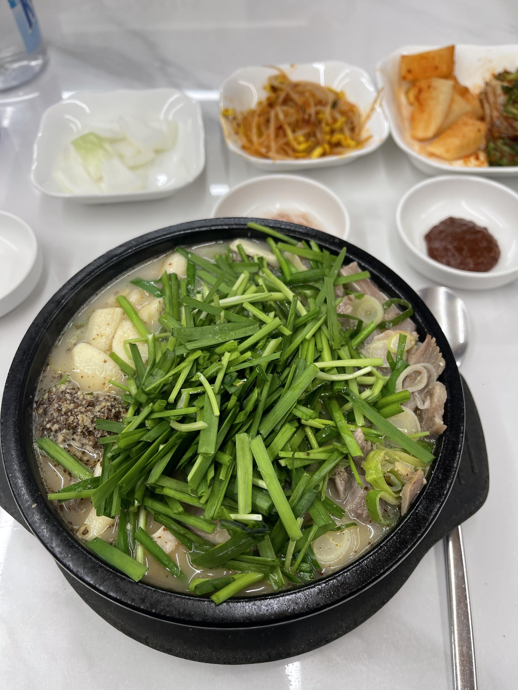
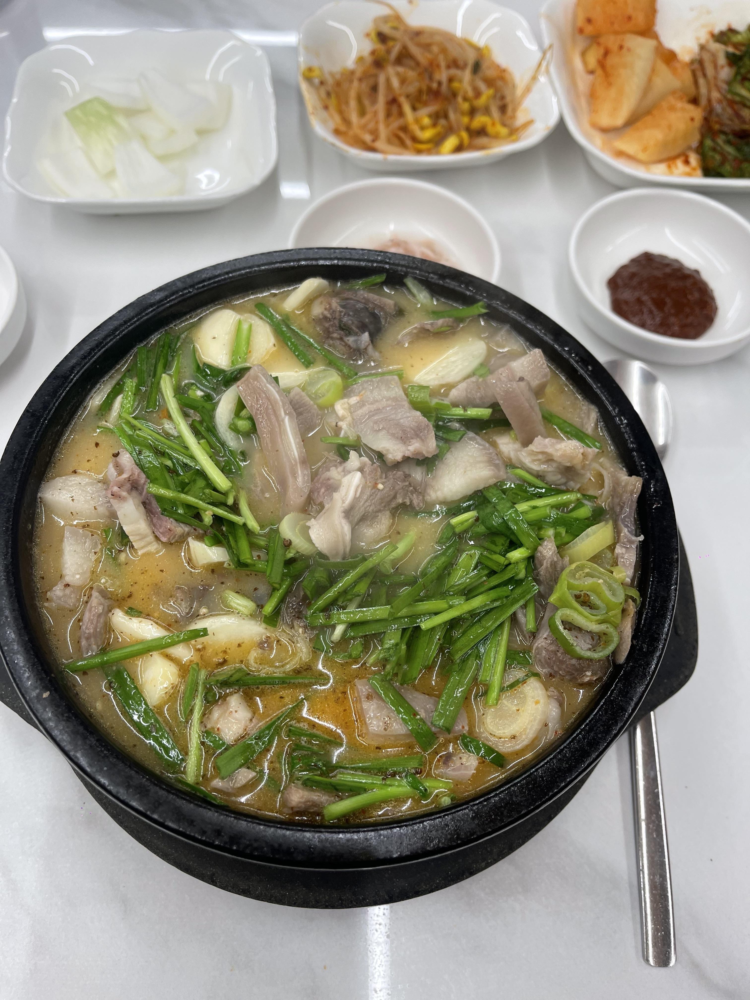
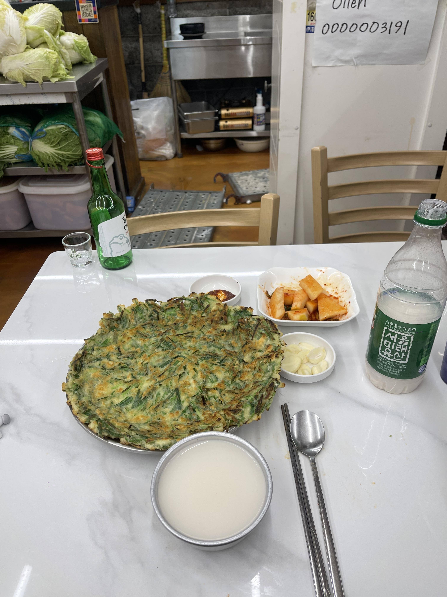
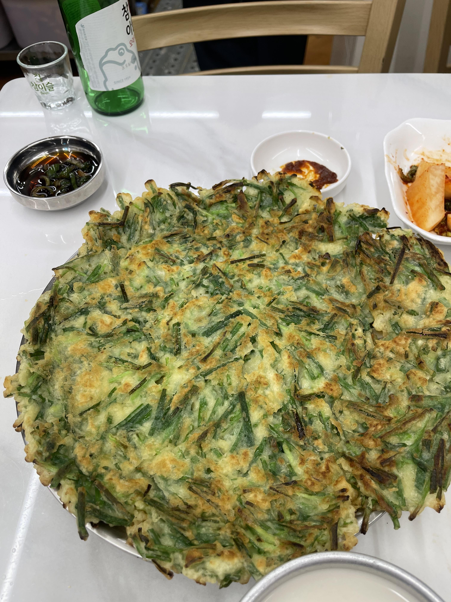

힌밤중에 목이 말라 냉장고를 열래다가
역시 배달보단 직방이지


부추 마늘은 사랑이지!!
부추전에 1병 더 깔래다가 평일이라 참아따.
할라 핸는데 사장님 꼬득임에 넘어가가


뜨겁 아삭 바삭 부추향에 안 시켰음 어쩔뻔.
힌밤중에 목이 말라 냉장고를 열래다가
역시 배달보단 직방이지


부추 마늘은 사랑이지!!
부추전에 1병 더 깔래다가 평일이라 참아따.
할라 핸는데 사장님 꼬득임에 넘어가가


뜨겁 아삭 바삭 부추향에 안 시켰음 어쩔뻔.
Sex
한병은 사알 모자라다. 부추전 아님 김치전 때릴까 고민중
와 부추 때깔봐라
부추 이렇게 주면 진짜 감동이지 그래서…
혼자 갔는데 부추 두 접시 내준거면 무조건 단골각이다
부추 추가랑 마늘은 최대한 착한척 하면서 달란거지
글에서 술냄새나요
부추전에 막걸리는 ㅅㅂ 개땡기네
빠삭한 가생이가 키포인트지!!
와 너 덕분에 오늘 점심은 국밥이다
새끼..기합!!
야간조 쉬는날이니
어제 먹은 순대국.... 당면 순대에 내장만 들어감..
잘먹네
쿠리만쥬게이 개드립하노
아 순대국밥
먼저 나오자마자 국물 딱 한 모금 마셔보고 간 맞춘 다음에 바로 밥 말아서 밥알이 국물에 푹절여지게 만듬
그런 후에 먼저 뜨거운 고기와 순대를 밥그릇에 담은 후에 살짝 식혀서 먹다가 살짝 느끼해질 때쯤 생양파에 쌈장 딱 찍어서 같이 먹어서 느끼함을 달렘
건더기를 한 60%쯤 먹으면 딱 알맞게 밥알이 국물을 흡수해서 이 때 먹으면 ㄹㅇ 진국임
밥 절반 정도 먹으면 슬슬 미각이 익숙해져서 맛이 밍밍해짐 이때 들깨 가루를 뿌려서 고소함을 추가해서 크으으으 다시 달림
이제 한 15~20%도 남으면 이때 다데기를 넣어서 마지막 짠맛에 익숙해진 혀들 더 짠맛으로 타격하는거임
극락
왜 혼자먹어! 나도 줘!
대지뇨속
근데 맛잘알 ㅇㅈ
사진을 잘찍은거냐 건더기 수북한거 실화냐
건더기 수북 + 부추 따블에 마늘도 따블
가게이름
서울에서 먹었어요~
건더기 양 뭐야! 여기어디임
선생님 술마실때 들깨 많이 넣으시면 안좋습니다
왜??
술이 들 깨 ㅋㅋㅋㅋㅋㅋㅋㅋㅋ
들깨속 성분이 알콜 분해를 방하하는 효과가 있대
아항 ㄱㅅ
건더기 ㅈㄴ 많이 주네
와.. 부추전 땡긴다
꼬득임 x 꼬드김o
어디냐
야스했네


부추전에는 양파고추장아찌
순대국먹을바엔 무족권 뼈해장국
이게 섹스지!
어딘데?
ㅇㅇㅇㄱㄹ 바로 옆이당
???
아재픽 ㄷㄷ
뎃지야!
못참겟다 나도 토욜에 조져야지
어으 시발 머릿고기 야하다
어디냐 뒤지네